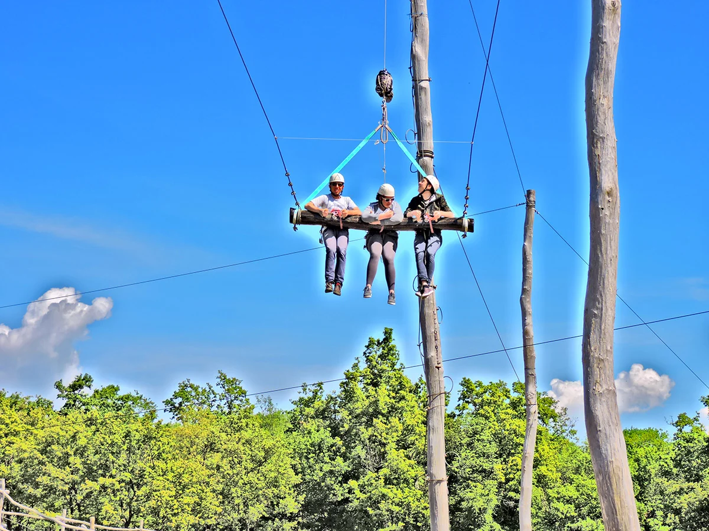

Pula as Your Istria Base Camp
Pula anchors the southern tip of Istria with one of Croatia's busiest airports, a deep-rooted Roman heritage, and immediate access to the Adriatic. Most visitors know the Arena — a first-century amphitheatre still hosting concerts and film festivals — and the nearby coastal nature park at Kamenjak, where rocky coves and pine-shaded paths define the classic Istrian summer. But staying in Pula also puts you within easy reach of inland villages, wine country, and some of the region's best outdoor adventures.
If you have covered the city sights and beach days and want something active, Glavani Park is among the top-rated things to do near Pula that does not require a full-day drive. The park sits 30 minutes inland at Glavani 10, 52207 Barban, on the road between Barban and Vodnjan — close enough for a morning outing before lunch back in Pula, yet far enough to feel immersed in Istrian forest countryside.
Coastal and Cultural Attractions Around Pula
Before heading inland, note the coastal highlights within 20 minutes of Pula centre. The Aquarium Pula occupies a former Austro-Hungarian fort and appeals to families with young children. Brijuni National Park — reached by boat from Fažana — combines archaeology, safari animals, and swimming. Kamenjak Nature Park at Premantura offers cliff jumping spots (for confident swimmers), cycling trails, and some of Istria's clearest water.
In town, the Temple of Augustus, Arch of the Sergii, and hilltop Venetian fortress reward a few hours of walking. Evenings belong to the harbour promenade and konobas serving Istrian pasta, seafood, and local Malvazija wine. These experiences define Pula; Glavani Park complements them with structured physical adventure rather than replacing them.
Glavani Park: The Inland Adventure Option
Spread across 1.5 hectares of oak forest, Glavani Park is one of Croatia's largest dedicated adrenaline parks. Attractions include three high-ropes routes (yellow 2 m, blue 6 m, black 10 m), a 120-metre zipline, a 113-metre zipline on the blue course, a 12.5-metre high swing, Human Catapult, 20-metre Quick Jump, and an outdoor climbing wall. English-speaking instructors operate every station with CE-certified harnesses and helmets.
The park suits families, couples, and groups based in Pula hotels, villas, or campsites who want a break from sand and sightseeing. Most visitors spend three to four hours on site. Free parking accommodates cars and larger vehicles. Opening hours are daily 9 AM–5 PM with last entry at 3 PM — plan to arrive before midday if you want to experience multiple attractions.
Book before you drive out — From the end of September until the start of July, all visits require advance booking; walk-ins are not accepted. From July through the end of September, walk-ins are accepted during opening hours (9 AM–5 PM, last entry 3 PM). Please call ahead to check we have space — we may not be able to accommodate walk-ins when we have a large group booking. Call +385 91 896 4525 or book online.
Combining Pula and Inland Istria in One Day
A popular itinerary: Roman Pula or Kamenjak beach in the morning, then drive to Glavani Park for an early-afternoon adrenaline session (remember last entry is 3 PM). Alternatively, dedicate a full morning to the park and explore Barban or Vodnjan afterward — Barban's medieval core and Vodnjan's towering church bell are both minutes from the park entrance.
Another option pairs Glavani Park with a wine tasting or truffle lunch in central Istria if you are willing to extend the drive. For tighter schedules, the park alone fills a satisfying half-day without rushing. See our broader guide to things to do in Istria for multi-day planning.
Getting from Pula to Glavani Park
From Pula, take the road toward Labin and turn at Manjadvorci toward Glavani. Continue left on the local road for 300 metres to the park entrance. Signage and GPS (45°1′17″ N, 13°57′4″ E) make navigation straightforward for rental-car visitors. No 4x4 or special vehicle is required.
Public transport options are limited; a rental car or organised excursion is the practical choice. Taxi and private transfer services from Pula can be arranged — provide the address Glavani 10, Barban, when booking. For detailed attraction information, visit zipline Croatia, family activities, and adventure park pages before you travel.
Repeat visitors from Pula often discover that inland adventure balances a beach-heavy holiday: after two or three days of swimming at Stinjan or Verudela, a forest zipline morning restores energy and gives teenagers a story to tell back at school. Glavani Park's shaded oak canopy also offers welcome relief when the coastal pavement radiates midday heat in July and August.